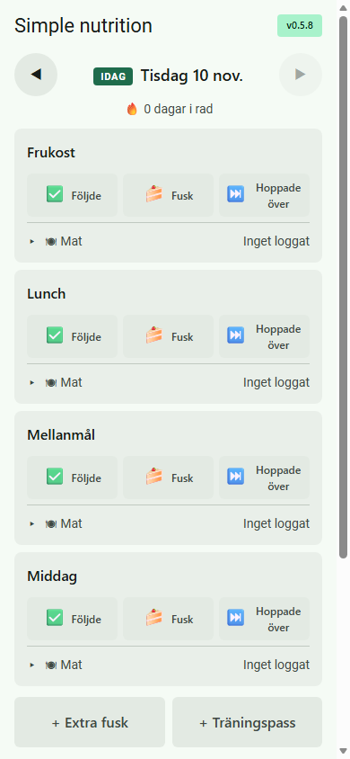
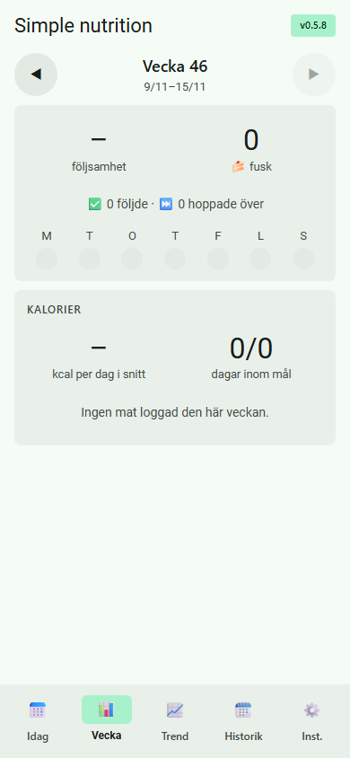
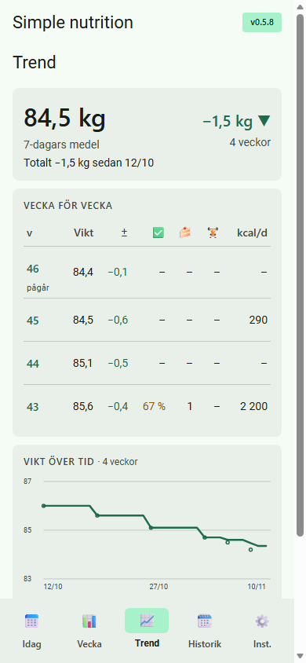

Simple nutrition
Vanor först – kalorier som stöd när du vill. Utan konto, utan reklam, utan ramverk.
Tre principer bakom appen
Ett tydligt fokus
Appen svarar på en enda fråga: äter jag som jag tänkt? Allt annat väljs aktivt bort.
Integritet först
Ingen inloggning, ingen spårning. Data stannar på telefonen, och webbläsaren stänger ute allt som inte är appens eget.
Ren webb
HTML, CSS och vanlig JavaScript. Inga byggsteg – hela appen kan levereras som en enda fil.
Simple nutrition
#2f7d5bVanor först – kalorier som stöd när du vill.
- Ett tryck per måltid: Följde · Fusk · Hoppade över
- Kalorier och makron ur Livsmedelsverkets data
- Egna rätter per portion eller hel sats
- Vikt, träning, vecka och trend över tid
- Krypterad backup, offline, ljust och mörkt tema



Idag · Vecka · Trend – påhittad exempeldata
Egen matdatabas – utan betal-API
- Livsmedelsverkets öppna databas hämtades en gång – 2 606 livsmedel med analyserade värden
- 91 vanliga kärnvaror med 195 butiksvarianter, t.ex. nötfärs 5 / 12 / 20 % fett
- Saknas en variant räknas den fram ur fetthalten – och märks ”beräknad”
- Egna mått: ”1 dl”, ”1 st”, avrunna burkvikter – så du slipper väga allt
- Över 100 rätter räknas om automatiskt vid varje release – mot Livsmedelsverkets rätter och allmänna standardvärden
Från gratis data till appen
Ärligt: standardvärdena i testerna är allmänna uppskattningar, inte mätningar. Livsmedelsverkets färdiga rätter är det oberoende facit.
Allt i telefonen – kopplat med referenser
l: Livsmedelsverket, b: beräknad variant.foods egna produkter → u:
dishes egna rätter → r:
log dag → poster som pekar på en vara eller rätt
goals, weights, meals, vanor och träning
Hög nivå – och det är testat
| Test | Rätter | Resultat |
|---|---|---|
| Vardagsrätter mot standardvärden | 30 | alla inom ±5 % |
| Bredare mix: wok, sallader, frukost, husmanskost | 61 | 54 inom ±10 % · summa −2 % |
| En hel dag (4 måltider) | 4 | 2 348 mot 2 316 kcal · +1,4 % |
| Mot Livsmedelsverkets färdiga rätter | 10 | alla inom ±20 %* |
Exempel, chili con carne: standardvärde 412 kcal · vår databas 413 kcal per portion. * Vattnet som kokar bort finns i den färdiga rätten men inte i receptets råvikt.
Mot betaltjänster för kaloriräkning
| Simple nutrition | Typisk betaltjänst | |
|---|---|---|
| Datakälla | En officiell källa, labbanalyserad | Stor databas, ofta användarinlagd |
| Råvaror och hemlagat | I nivå – testat inom ±5–10 % | Bra, men samma vara i många versioner |
| Märkesvaror och streckkod | Saknas – lägg in egen produkt | Bättre |
| Integritet | Bättre – inget konto, all data på telefonen | Konto i molnet |
| Kostnad | Gratis, ingen reklam | Månadsavgift |
Jämfört mot Livsmedelsverket och allmänna standardvärden – inte mot betaltjänsternas egna databaser.
Säkerhetstestad
Automatiska tester körs före varje commit och push. Underkänt test = ingen release.
Säkerhetskontroll
- Bara appens egen kod körswebbläsaren blockerar allt annat, även om någon försöker smyga in något.
- Inget lämnar telefonenappen pratar aldrig med någon server.
- Din data stannar hos digsparas bara i telefonen; appen rör bara sina egna uppgifter.
- Fungerar utan nätmed bara appens egna filer – inget hämtas utifrån i smyg.
- Låst backupbara ditt lösenord öppnar filen – samma typ av kryptering som banker använder. Lösenordet sparas aldrig.
Funktionstester
- Trasiga filer stoppasen backup från fel app, eller som någon ändrat i, läses inte in.
- Inget innehåll kan bli kodallt visas som vanlig text, även konstiga namn.
- Export och importbackup tur och retur ger samma data; styrtecken rensas.
- Matdatanöver 100 rätter räknas om mot facit vid varje release.
Material Design 3, byggd för mobilen
Färg via roller
Nyckelfärgen styr allt. Ljust och mörkt tema följer telefonen. Nästan kantigt och tätt.
Bottenmeny för tummen · tryckytor ≥ 48 px · systemtypsnitt
Samma struktur, varje gång
index.html styles.css app.js store.js version.js sw.js docs/ SPEC · MANUAL · presentation tools/ tester · bygge dist/ testfil med allt inbakat
- SPEC först – idé, mål, icke-mål
- Säkerhet: förhandsprövning före bygget, efterkontroll före push
- Release kör kontroll och alla tester – underkänt stoppar
- Det som blir bättre här förs in i alla appar
Installera på 30 sekunder
- Öppna adressen i Chrome på mobilen:
flyinggooner.github.io/simple-nutrition - Tryck på ⋮ och välj Installera app. På iPhone: Dela → Lägg till på hemskärmen.
- Öppna appen från hemskärmen. Den startar i eget fönster.
Enkelt för användaren.
Genomtänkt bakom kulisserna.
Rena råvaror, dina vanor och din data – bara i din telefon.